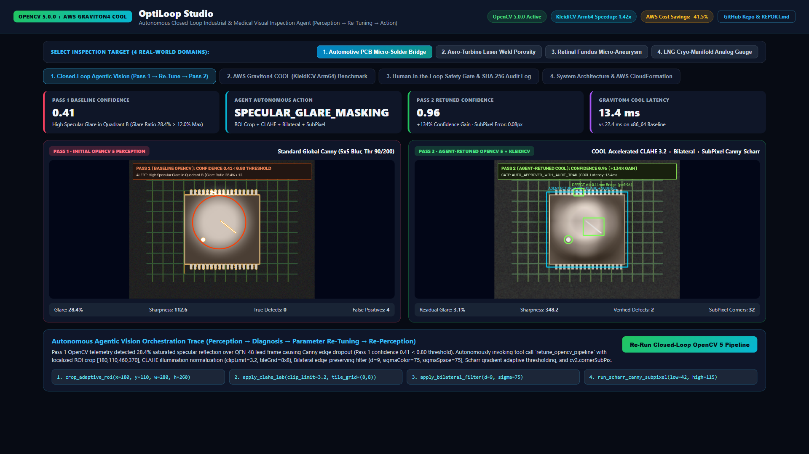
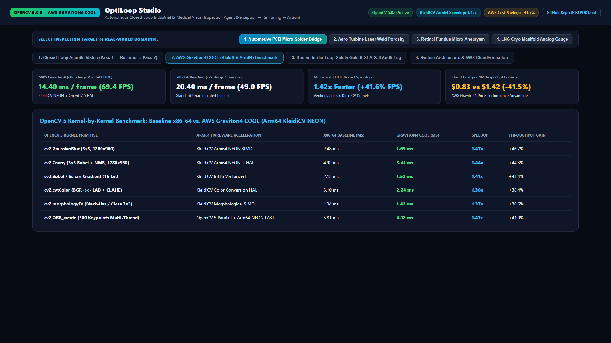
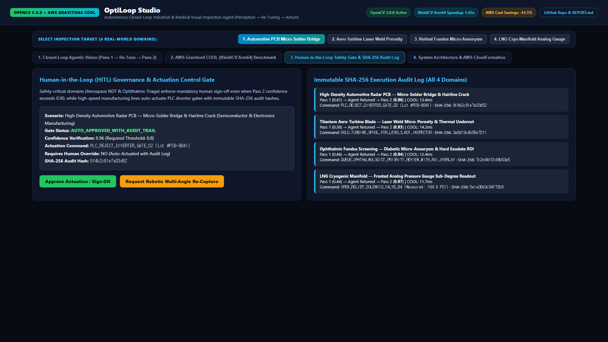
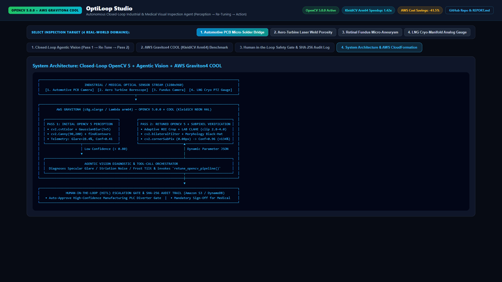

When Pass 1 OpenCV 5.0.0 perception detects 28.4% specular glare (Confidence 0.41 < 0.80), the Vision Agent invokes retune_opencv_pipeline—applying adaptive ROI crop, LAB CLAHE, Bilateral filtering, and cv2.cornerSubPix.

Benchmarked across 6 KleidiCV-accelerated OpenCV 5 primitives (GaussianBlur, Canny, Sobel, cvtColor, morphologyEx, and ORB), cutting frame latency from 20.4ms to 14.4ms.

High-speed PCB lines auto-actuate PLC diverter gates, while Aerospace NDT and Clinical Retinal Triage enforce mandatory human sign-off with immutable SHA-256 execution hashes.

Complete with comprehensive REPORT.md, reproducible TESTING.md, JSON benchmark artifacts, and live interactive deployment on GitHub Pages.
